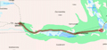
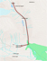
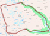
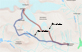

Här kan du lätt hitta fakta om allt som har med vandring att göra, packlistor, utrustning, boende är bara några av ämnena vi tar upp här. Börja med att välja ämne till vänster för att komma till den delen.
Bestigning av Kebnekaise
Det enklaste och snabbaste sättet att bestiga Kebnekaise är att först bege sig till Kiruna, med flyg tar det 1,5 timme från stockholm. Från Kiruna tar man enklast sedan buss till Nikkaloukta, däriftån går man sedan västerut längs en rösad led på 20 km till Kebnekaise fjällstation. Sedan har man två generella leder att välja för att bestiga berget. Antingen kan man välja den mindre avancerade men längre leden, den västra leden som passerar kittelbäcken, Vierramvare, kaffedalen och toppstugorna. Eller så kan man välja den mer avancerade leden, den östra leden som kräver större kunskap om området, då går man över Björlingsglaciär och avslutar med en bersklättring till toppen.
Kebnekaise har två toppar, nordtoppen och sydtoppen, nordtoppen är på 2097 m.öh. Sydtoppen som är den högsta ligger på 2104 m.öh. Dock så består sydtoppen till stor del av en glaciär vilken gör att höjden varierar, om glaciären skulle smälta tillräckligt skulle det leda till att nordtoppen blir den högsta toppen då den består av berg.
Vandringsleder
Vandringslederna vi nämner nedan är relativt vanliga rutter och är därför oftast bra utmärkta längsmed sträckan vilket gör det lättare att hitta.
Nikkaluokta till Kebnekaise fjällstation
För att ta sig in i kebnekaise området behöver man gå mot kebnekaise fjällstation. På fjällstationen kan man bo och därifrån kan man ta olika dagsturer i området om man vill. För att ta sig till fjällstationen följer man leden från Nikkaluokta, denna vandring är på ca 2 mil fågelvägen och tar ca 1-2 dagar.

Kebnekaise fjällstation, Tarfala, fram och tillbaka
En av dagsturerna man kan göra ifrån fjällstationen är att gå tarfala leden. Vid tarfaladalen finns en forskningsstation som tillhör stockholms universitet. Detta är som sagt en dagstur tur och retur.

Runt kebnekaise, via Vistasvagge
Man kan antingen vandra den första biten eller ta en båt en bit uppför vägen till Vistasvagge. Inga andra stugor än Vistasstugorna som ligger ca 34 km från Nikkaluokta finns i Vistasvagge, därför krävs det att man har tält. Andra eller tredje dagen kommer man fram till Vistas. Sedan vandrar man till Nallo, Sälka, Singi sen Kebnekaise fjällstation och tillbaka till Nikkaluokta. Denna vandring tar minst en vecka.

Från fjällstationen upp på kebnekaises sydtopp och tillbaka. Båda Lederna är endags turer.
Västra leden:
Rutten är utmärkt med röd-målade stenar. Först via kittelbäcken och vidare uppför vierramvare, ner till kaffedalen och sedan upp toppstugorna och sydtoppen. Sedan samma väg tillbaka.
Östra leden:
Leder till sydtoppen precis som västra leden men över glaciärerna istället, deusstom är led guidad. Leden är något kortare vilket gör att den inte tar lika lång tid, det finns dock ställen där man behöver klättra.

Tillbaka till menyn
Boende
Antingen kan man välja att sova i tält vilket betyder en tyngre packning och det kan vara besvärligt vid dåligt väder, eller så kan man välja att sova i stugor ochpå fjällstationen. Det finns många olika stugor spridda över Kebnekaiseområdet där bland Singi, Tarfala, Sälka och Vistas. Nackdelen med detta är att man är begränsad till vissa platser och måste måste hinna till en stuga innan man kan sova. Dessutom kan det kosta en slant beroende på var man övernattar.
Med tält har man friheten att tälta i princip överallt utan att behöva betala för sig, detta ger en mycket större frihetskänsla. Man kan även göra en kombination av dessa två bometoder.
Det finns mycket att tänka på när man tältar, dels var man ställer det så att man inte vaknar i en mindre sjö efter en regnskur. Det är även viktigt att tänka på vilken håll vinden blåser ifrån och hur den ändrar sig så att man inte låter vinden få något att "greppa tag i". Om man väljer en plats där det blåser mycket minskar andelen mygg men det förlorar man istället i värme. Om man tältar någonstans där det blåser mycket är ett bra tips att lägga tunga stenar längs tältsidan så att det stabiliseras.
Tillbaka till menyn
Fauna
Kungsörnen
Kungsörnen förekommer i kebnekaise-området, vi fick dock aldrig syn på någon eftersom det är ganska ovanligt. Vanligaste platsen att se den på är i Tarfalavagges nedre delar.
Dalripa
Daniel Wedenborg och Marcus Lilliequist hade en väldigt traumatisk upplevelse vid deras första möte med fjällvärldens dalripa. Det var mitt i natten då Wedenborg flög upp ur sovsäcken, med en ängslig stämma väckte han Marcus som snabbt också blev förfärad över ljuden som kom från ripan utanför tältet. Trots rädslan lyckades Daniel och Marcus så småningom somna om. Denna ”livsfarliga” dalripa, som för övrigt livnär sig främst på bärris och videkvistar, förekommer i Europa, Nordamerika och Ryssland. I kebnekaise-områdena så hittar man honom främst i de lågalpina områdena. I vintertid håller han till i skogsområdena.
Däggdjur - De enda däggdjuren vi lyckades få syn på var renar. Men inte blir man besviken för det, det var mycket häftigt att se de stora renarna gå runt och beta. Jag (Simon) tog mig även möjligheten att springa efter en stor mäktig renhane, även om det inte var så lätt att hinna med så var det skoj!
Det kan även förekomma brunbjörn, järv, varg och lodjur i fjällområdena men dessa är väldigt sällsynta.
Tillbaka till menyn
Utrustning
Tält: Under våran tid uppe vid kebnekaise-massivet, använde vi oss av 2 st 2-3-manna tält. Eftersom tälten var lite större än vad vi behövde för att få tillräckligt med sovplats, kunde vi dessutom ha ryggsäck och annat innanför tälten vilket visade sig vara en väldigt bra idé för att hålla grejerna torra vid regn.
Sovsäck: Det kan vara bra med en hyffsat varm sovsäck som har comfort temp. runt -5 C, eftersom det blir lätt ganska kyligt under natten.
Liggunderlag: Våran erfarenhet är att man kan ganska lätt hitta tältplatser där marken är hyffsat mjuk och jämn och därför bör man klara sig med ett lite tunnare liggunderlag, om man tycker det blir jobbigt att bära på ett som väger mycket och tar plats.
Rep, tejp: Tejp och rep kan vara väldigt användbart ifall något behöver repareras.
Ryggsäck: Stor ryggsäck som har midjespänne för att avlasta axlarna, det är även ett stort plus att ha ett avlastande bröstspänne. Om man inte har tillräckligt stor ryggsäck kan man alltid binda fast utrustning utanpå.
Karta, Kompass: Om man bara är ute efter att bestiga sydtoppen är både karta och kompass onödigt eftersom leden är rösad och enkel att följa. Om man däremot vill gå runt och utforska andra områden är det smart att ha med sig både karta och kompass.
Stor vattenflaska eller flera små: Bättre med mindre vattenflaskor (max 1l) för det kan vara jobbigt att släpa på en stor tung flaska, det finns ändå så pass många bäckar där man kan fylla på vatten.
Ihopfällbar vattendunk: Väldigt bekvämt att ha en vattendunk på 5-10 liter vid tältet så man inte behöver gå och hämta nytt vatten stup i kvarten.
Skoskavsplåster: Mycket viktigt ifall man har lätt att få skavsår. Att rekomendera är apotekets skavsårsplåster som dessutom har en lätt bedövande effekt.
Värktabletter: Tabletter mot magproblem är bra att ha med eftersom vattnet kan innehålla bakterier om man har oflyt.
Solbrillor: Bra att ha med eftersom man lätt får kramp i ögonen eller får ont i huvet om man behöver gå runt och kisa hela tiden.
Ficklampa: Bra att ha vid tältet ifall man behöver gå upp mitt i natten eller liknande.
Tillbaka till menyn
Kläder:
Kängor: Stabil sula som gör att man inte får ont i fotsulorna av underlaget, eftersom det är mycket stenigt. Gore-tex och läder kängor är att rekomendera eftersom de är hyffsat vattentäta när man behöver gå över små bäckar, de har samtidigt hyffsat bra luftcirkulation. Det kan även vara smart att ha med ett par extra skor som är lätta att bära med, förslagsvis sandaler, eftersom det kan vara skönt att slippa kängorna ifall man håller till vid tältet, sandaler kan även behövas ifall man ska korsa ett vattendrag och inte vill riskera att blöta ner kängorna.
Underställ: Underställ fungerar bäst om du har det närmast kroppen. Det är också väldigt viktigt att ditt underställ kan transportera bort fukt från kroppen, därför är det mest optimala ylle underställ eftersom du kan svettas i det under ett par dagar utan att det börjar lukta.
Tröja/byxor: Ovanpå understället ska du ha kläder som kan suga upp fukten som understället transporterar bort från kroppen. Bomullskläder fungerar utmärkt.
För att klara den tuffare turen som en vandring innebär bör du använda ett par slitstarka byxor som dessutom håller vinden borta.
Strumpor: Det är väldigt viktigt att ta hand om sina fötter när man är ute och vandrar och ett enkelt sätt att slippa skavsår är att ha dubbla par strumpor i skorna. Eftersom strumporna ”skaver” mot varann istället för mot din hud får du inte lika lätt upphov till skavsår. Om du dessutom använder skavsårsplåster bör du klara dig helt.
Regnkläder: Det är viktigt att ha med regnkläder eftersom det kan ta lång tid att torka upp blöta kläder.
Vindkläder: Vindkläder är nödvändigt eftersom det blåser väldigt mycket på vissa platser och eftersom regnkläder inte har någon bra andningsförmåga.
Mössa: Mössa är viktigt att ha med under vandringen eftersom man lätt får ont i huvet när huvudet kyls ner av vinden.
Vantar: Kan va bra att med sig ifall det är kallt och om man lätt får torra händer och sår på nagelbanden.
Tillbaka till menyn
Mat:
Frystorkad mat: Frystorkad mat är väldigt bekvämt eftersom det går ganska snabbt att laga till och tar dessutom väldigt lite plats. Vid fjällstationen kan man köpa frystorkad mat ifall man inte vill köpa med sig hemifrån, däremot får man räkna med att allt kostar lite mer där.
Gas/spritkök: Ett gaskök väger mindre än ett spritkök därför är det lättare att bära med, dessutom är det lättare att använda. På järnia i Kiruna kan man köpa med sig gasbehållare, men det finns även på fjällstationen.
Stormtändare: Kan vara bra att ha med pga av vindförhållandena, det fungerar även bra med stormtändstickor.
Tillbaka till menyn
Packlista:
Tält
Sovsäck
Liggunderlag
Rep, tejp
Ryggsäck
Kängor
Extra skor, gympadojor
Regnkläder
Vindkläder
Mössa
Vantar
Karta, Kompass
Stor vattenflaska eller flera mindre
(Frystorkad)mat
Gas/spritkök
Stormtändare
Ficklampa
Kastruller
Underställ
Ombytes kläder är bra att ha med
Disksvamp
Ihopfällbar vattendunk
Skoskavsplåster
1a hjälpen låda
Värktabletter
Solbrillor
Toapapper
Tillbaka till menyn
|


{kind=link}
{kind=link}
{kind=link}
{kind=link}